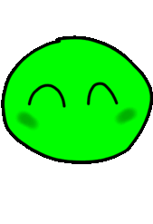

Partez à l'aventure dans Slippery Slime!
Slippery Slime est un jeu d’aventure à la 3e personne où vous devez résoudre des puzzles et sauter sur des plateformes pour atteindre votre objectif. Dans cette magnifique aventure, vous devez manger des objets pour augmenter votre masse. La grosseur du slime s’adapte à sa masse. À tout moment, le joueur peut propulser cette masse sous forme de boule de slime. Certains objectifs demandent au joueur d’accumuler un certain poids, alors que d’autres lui obligent à réduire sa taille, et ainsi, sa masse. Mais ça ne s’arrête pas là! Le slime détient une multitude de pouvoirs lui permettant d’éviter des obstacles et de progresser vers la fin des niveaux! Attention! Des gardes et un magicien furieux lui bloquent le chemin…
Dans ce jeu vous contrôlez Slippy. Slippy est un slime, une petite sphère gluante, qui vit paisiblement dans le pays des slimes. Tout à coup, il se fait téléporter dans un endroit totalement inconnu. En effet, le terrible magicien a essayé de l’amener dans sa tour pour l’utiliser comme un rat de labo. Cependant, une erreur s’est produite : Slippy s’est fait téléporter dans une prison abandonnée près de la tour… Perdu dans un autre monde, le slime est dévasté. Dans l’espoir de retourner chez lui, il part à la recherche du magicien.
Avalez toute sorte d’objets pour augmenter votre masse et votre volume!
Avaler un objet augmente la masse et le volume du slime. Certains objets peuvent être digérés tel qu’un pain, une pomme, de la viande. D’autres sont conservés dans le slime. Par exemple, les clés, les boîtes, les roches et les bombes sont conservées à l’intérieur du slime lorsqu’il les avalent. À tout moment, le slime peut cracher une partie de son corps. S’il détient un objet indigérable, celui-ci sera propulsé. Or, s’il n’en possède pas, le slime recrachera une partie de son corps sous forme de boule gélatineuse.
Activer des mécanismes pour frayer votre chemin dans les niveaux!
Pour activer une plaque de pression, placez un objet sur la plaque de pression ou bien augmentez votre poids pour qu’il corresponde au poids requis. Les plaques de pressions activent toutes sortes de mécanismes comme l’ouverture d’une porte, l’ouverture d’un portail spatiale, l’explosion d’un mur, l’apparition d’une bombe, etc.
Achetez des accessoires pour personnaliser votre slime!
Choisissez parmi une multitude d’accessoires tels qu’un chapeau d’ouvrier, un sombrero, une couronne, un chapeau de cowboy et bien plus. Slippy portera les accessoires choisis à travers les niveaux.
Changez la couleur du slime et du menu!
Vert, bleu, rouge, jaune, mauve, orange… Faites votre choix! Changer la couleur du slime change également la couleur de tous les éléments du menu!
Parcourir de longues distances avec le grappin!
Une rivière vous bloque le chemin? Un endroit est trop haut pour l’atteindre? Ça ne dérange pas le slime. En effet, Slippy peut s’accrocher sur des points d’ancrage avec le grappin afin d’atteindre des zones inatteignables.
Gelez l'eau pour vous frayer un chemin!
Vous ne savez pas nager? Vous n’avez qu’à vous créer un chemin sur l’eau en la gelant. Le souffle glacial permet de faire apparaître des plaques de glace sur l’eau. Après quelques secondes, les plaques disparaissent.
Effectuer un « dash » pour vous propulser par l’avant!
Si vous êtes trop loin pour sauter sur la prochaine plateforme, utilisez le « dash »! Le dash propulse le slime vers la direction de son mouvement. Si le slime est immobile, le dash le propulsera dans la direction de la caméra.
Explorez une variété de niveaux!
Notre équipe

